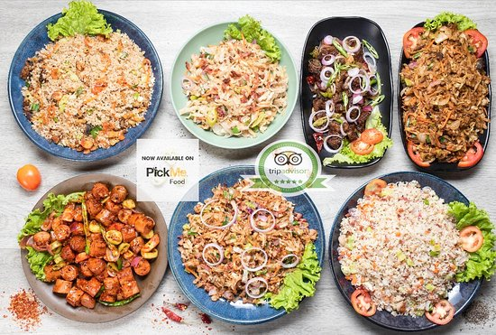

Beach Side Restaurant in Sri Lanka
|
Buba Beach seafood restaurant
Free wifi free parking Buba beach seafood restaurant is located in Dehiwla,in colombo district,it is good place to take your dinner,lunch with enjoiyng your family together.it has special dinner menue also. it is private beach side venue. take away facilities also available |
The Coco BeachFree wifi free parking The coco beach restaurant is located in negombo in colombo district .it opens every day at 10.30 am to 11.30 pm special meals available for both lunch and dinner for better charges. |
Bacco Wine Bar BistroFree wifi free parking In this restaurant you will be avaialable to italian,pizza,Mediterranean,Europe,wine bar. special Diets for vegitarian friendly,Vegan option Lunch ,Dinner,Brunch also available for 24 hours open |
coronation restaurant and Bar
Free wifi free parking coronation is located in Negombo and and chinese restaurant.bar and Fast food facilites.it opens 11.00am to 2.00pm.resturant is listed as a TOP Restaurant , For safety : By UberEats and Pickme Food ..enjoy lot |
|
Free wifi free parking The Black Coral is renowned for its exceptional haute cuisine and fantastic selection of wines. A meal at this sophisticated fine-dining restaurant is an investment that won’t disappoint. It is situated at Jetwing Beach Hotel, Negombo. |
|
Free wifi free parking
papou's restuarent offers Takeout, Reservations, Outdoor Seating, Seating, Wheelchair Accessible, Serves Alcohol, Free Wifi, Table Service and meals are available dinner lunch breakfast also.sea food chinese food and vegetable meals also available.enjoy more |
Queen's restaurant
Free Parking Area Free wifi queen's is located in negombo in western province.it's open from 7.30 am to 11.00pm.available breakfast,lunch,dinner ,special diets for Vegetarian Friendly, Vegan Options, Gluten Free Options.features for Reservations, Seating, Serves Alcohol, Table Service |
Sunny restaurant
Free wifi Free parking sunny restaurant is a Friendly family owned restaurant specialising in Seafood and Sri Lankan rice & curry, lovely location on the main beach road, oposite Negombo beach. Special diets for Friendly family owned restaurant specialising in Seafood and Sri Lankan rice & curry, lovely location on the main beach road, oposite Negombo beach.price range :LKR 923 - LKR 3,691 |
Prego Italian restaurant
Free wifi free parking Italian cuisine and wine bar ,,They do serve fresh home made pizza and fresh pasta ,, Italian way grilled seafood .. and nice wine from all over the world. Features Takeout, Reservations, Outdoor Seating, Seating, Highchairs Available, Wheelchair Accessible, Serves Alcohol, Full Bar, Free Wifi, Accepts Credit Cards, Table Service |